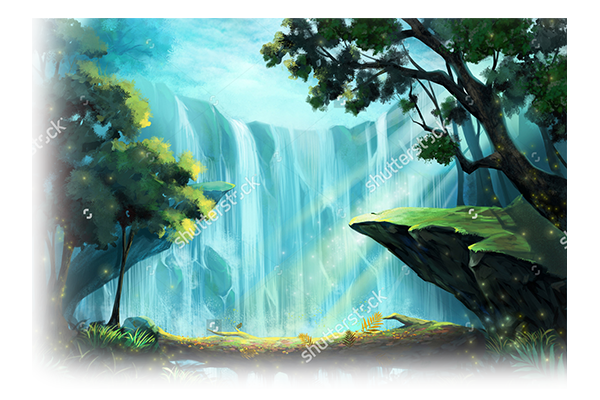
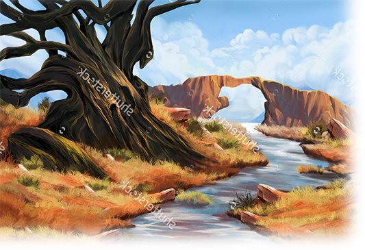
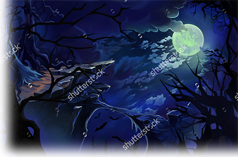

<body>
    <div class="container">
        <div class="row pushRow frontpageMediaRoW">

            <div class="col-md-12 fpMain">

                <h1 class="text-center"> Welcome to Dungeon Scrawler </h1>

                <p> This site can help you create, maintain and share your DnD campaigns with your friends with an emphatize of making </p>
                <p class="pPush"> it easier for everyone involved to keep track of the many aspects a DnD game offers.. </p>

                <div class="row">

                    <div class="col-md-6">
                        <p class="pPush2"> It helps you keep track off: </p>
                        <ul>
                            <li> Characters </li>
                            <li> Inventories </li>
                            <li> Attributes </li>
                            <li> Monsters </li>
                            <li> Possible items to loot </li>
                            <li> and a lot more! </li>
                        </ul>
                    </div>

                    <div class="col-md-6">
                        
                    </div>

                    <div class="col-md-6">
                        
                    </div>

                    <div class="col-md-6">
                        <h1> Tracking your campaign </h1>
                        <p> Keeping a track of the campaign's characters and their progress is made easier using the Dungeon Scrawler interface. </p>
                        <p> It makes it possible for the GM and players to fill out their respective characters attributes, skills and inventory, making it easier to keep a track of everyone's progress throughout the campaign. </p>
                    </div>                    

                    <div class="col-md-6">
                        <h1> Look back on past campaigns </h1>
                        <p> You can also look through past campaigns for inspiration for new ones or look back on fond memories you all created throughout a specific campaign. </p>
                        <p> This can also help to find references for how you handled previous similar situations, as a help for new or less experienced GMs. </p>
                    </div>

                    <div class="col-md-6">
                        
                    </div>

                    

                </div>

            </div>
        </div>
    </div>


</body>
